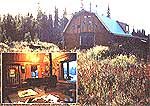

Patience, planning, and persistence helped this couple's dream turn into sweet reality!
Last spring, I danced with two sandhill cranes right in the middle of our very own meadow as my husband Ron stared goggle-eyed - and cameraless - out the bay window. We had followed the birds' antics all morning as they edged closer to the house. Finally, unable to resist, I sneaked outside and presented myself to them with a loud "Awk!"
To my astonishment, the one closer to me started to dip and dive while prancing in a circle. The other followed suit, picking up clods of dirt in its beak with each dip, then flinging them overhead, all the time eyeing me with obvious curiosity. Impulsively, I mimicked their strange ritual and was allowed to participate until, uttering their watery-sounding, trilled cries, they rose to glide out of sight over the trees.
And to think, not long ago we were stuck in Anchorage!
ANOTHER KIND OF SANITY
Many of our friends thought that no one in his (or her!) right mind would trade double-incomed, big-city security (full medical and dental coverage, six weeks of paid vacation per year, plus retirement benefits) for a log house on ten acres surrounded by miles of the rawest wilderness in the country! But just a year ago - feeling perfectly sane - Ron and I did just that, and we both agree that it's been a most successful swap!
A DREAM DISCOVERED
Actually, the decision to change our lifestyle was made back in the spring of '78, when we skied into a large, isolated meadow and spotted a "For Sale" sign. Behind it, a crumbling log shed and a leaning outhouse - relics of bygone homesteading days - stood within weathered log fences near a thick forest that crowded the field. No houses spoiled the view, and there was no traffic. Five miles of snow-choked trail led to the tiny fishing village of Ninilchik with its much-photographed Russian Orthodox church, and the nearest town was an hour's drive away. Best of all, Anchorage was 200 miles distant! As we soaked in the silence and seclusion, Mt. Illiamna, 35 miles across Cook Inlet, caught the rosy glow of sunset, and two golden eagles circled overhead. We felt we had "come home".
In fact, looking back on it, there's no doubt that those few, short moments in that clearing changed us. Almost immediately, what little enthusiasm we had entertained for city life dwindled and was soon replaced by a dream . . . and a plan that went like this:
Over the next few summers, we could build a house in "our meadow" (as we had come to call it) by working weekends and taking extra time around holidays. Since we'd keep our full-time jobs while in the process of setting up our homestead-to-be, Ron's salary could cover construction costs, and mine could pay for our continued urban living expenses. By spreading the project over several years, we could pace our building speed to match our earning capacity, eliminating the need to take out a loan.
We also figured that when we moved (say, late in '82), the equity from our Anchorage home would pay of any debts. In short, we'd own everything free and clear and have enough reserves to carry us through the first year "on our own", during which (we hoped) our woodworking business would get off the ground. Then too, by raising a garden and relying on the surrounding wilderness for meat and fish, we'd be well on our way toward self-sufficiency.
PLOWING THROUGH THE PRELIMINARIES
The first thing we did was use our savings to buy those ten acres, making them truly ours. We spent the rest of the year putting away more money, developing house plans, and scrounging materials. Before raising a single log, we had stockpiled enough plush carpet and padding to warm the floors of two bedrooms . . . as well as solidcore birch doors for all the interior rooms . . . quarry tile for the kitchen . . . two styles of wallpaper . . . a bay window . . . a pair of skylights . . . two large chandeliers . . . a baseboard heating system . . . three sinks, two tubs, and a toilet . . . and scads of lumber.
In the meantime, after visiting friends' homes and "model" homes and searching through hundreds of magazines, we designed a 24' X 40' log house with a gambrel (barn-type) roof, a half-loft with two dormers, a cathedral-ceilinged living room, and a six-foot crawl space/ root cellar. A covered 40-foot porch along the entire front would accommodate a month's supply of firewood, and a deck off the second-story bedroom would offer a view of Mt. Illiamna.
LONG-TIME, LONG-DISTANCE CONSTRUCTION
The actual building of the house started Memorial Day weekend of 1979, and with it began a routine we'd follow during the next four years: All week we'd buy and/or organize materials, loading them onto a 16-foot trailer. Right after work on Friday, we'd head for Ninilchik. Five hours later, after pitching the tent (while being eaten alive by swarming masses of Alaska's "state bird", the mosquito) we'd sink gratefully into our sleeping bags.
Taking advantage of the long Alaskan days, we worked late - often after midnight - and were back on the job early the next morning. I established a cook shed under the overhang of the crumbling log shack, and the shelter it offered (when the wind was right) was welcomed, though the fact that I shared that refuge with clouds of mosquitoes was not! Then, come Sunday afternoon, we dragged home, already planning what to do next and making lists of materials to be picked up during the week ahead. That pattern went on . . . and on!
Two of the summers that we spent on the project were the wettest on record. We got used to having water seep down the insides of our sleeves under our rain gear. The endless mire of ruts we called our driveway developed into a swamp negotiable only - and barely - with four-wheel-drive vehicles. (More than one friend swore never to return . . . if we'd pull them out so they could leave!)
As the house took shape, we learned some valuable tricks of the trade. For example, research told us that during the years it would take for the logs to dry out, each of them would probably shrink an eighth of an inch in diameter. Therefore, a wall of 16 such timbers would settle two inches. To allow for this, we left gaps over each door and window . . . cut vertical grooves in the uprights flanking each major opening where slippage might occur . . . and constructed each inside frame wall (kiln-dried and thus not expected to shrink) so that it floated free in a groove in its log counterpart. In addition, we set blocks under each first floor beam and under the stairway.
With just the two of us working (and me a 110-pound weakling!), we had to devise methods of handling the tremendous weights involved in house construction. We lifted the massive beams that support both the second story and the roof into place by jacking them, inch by steady inch, from the ground with two rope come-alongs tied to a rafter. We built the frame walls in short, 12-foot sections and hauled them upright, again with a come-along that this time was hitched to the truck. We forced stubborn, twisted logs into line with an ingenious system of 2 X 4 levers. And we moved the woodstove into place using several lengths of leftover copper pipe as rollers.
As time passed, we built better and better working conditions for ourselves. (Most laborers have to go on strike for such things!) The addition of the roof ended our weekly soakings and allowed us to sleep indoors, often to the lulling drum of rain on tin. Windows - with real screens - at last kept the bloodthirsty mosquitoes at bay. And eventually I moved the cookstove to (of all places) the kitchen . . . and abandoned our water jug in favor of cold, chlorine-free liquid piped from a 37-foot-deep well that produces 22 gallons per minute. With a choice of electrical outlets in every room, we no longer had to fight over the one extension cord coming from the one plug-in on the outside pole.
During that final winter, our Anchorage headquarters became a factory/warehouse. We accumulated five major appliances and, since we had no garage or basement, stored them in the only logical place: the house. Likewise, because we had no workshop, we built bathroom vanities and a set of kitchen cabinets in the only space possible. (Right! The house!) Sawdust covered everything, even the ceilings, and we wrote notes to each other in the dust on the bathroom mirror.
When the snow melted, we moved the truck from the carport so that Ron could use that space to build (and I'm not kidding) a 23-foot dory. While under construction, the boat grew longer than its shelter and finally hung out the back. Later, we had to squeeze the completed skiff out into the driveway next to the car and the pickup: We needed the room in the carport for Ron to finish the welding on a trailer to haul the boat. And if all that wasn't enough clutter, we'd also been hoarding case lots of canned goods over the previous months - food that could carry us through our first winter in the boondocks. Somehow, surrounded by all that chaos, I managed to sew drapes, hook rugs, do macrame, and make stained-glass windows. It was a time I'd really rather forget!
THE WRAP-UP
Over the course of the last "working" summer on the site, we finished four rooms down to the smallest details. Being able to enter a clean room for a while and close the door on the house's messy, still-under-construction area proved to be a great shot in the arm. In addition, the material for doing the rest of the house was stacked in the dining room - directly in the path of traffic - where, we reasoned, we would be inspired to use it and thereby avoid another potential trap: becoming accustomed to living among the exposed studs and rafters of an unfinished home.
After installing the woodstove and cutting enough logs to feed it for three months, we locked the door and headed back to Anchorage. When we returned, it would be for good!
Once in town, we sold my car and found a buyer for the house. (It turned out to be the postman, so we didn't even have to worry about having our mail forwarded.) I quit my job and - for the next two months - prepared for the Great Swap.
THE MOVING NIGHTMARE
The long-awaited Big Day, October 2, finally arrived. As we moved out the back door, the new owners were moving in at the front. We filled a U-Haul van (the largest available), then the pickup, and then the trailer . . . and still had to leave things behind to be picked up the following spring. At 3:00 PM, hours behind schedule, we headed out . . . an overloaded, creeping convoy of two. Just south of Anchorage, at the beginning of the first stretch of rough road, the truck blew a tire. We found the spare by disconnecting the trailer and unloading the whole pickup . . . all in the mud and the blood and the pouring rain. At midnight - nine hours and 200 miles later - we parked at the head of our swampy road, knowing the van would never make it in.
And so for the next two days we ferried everything we owned from the U-Haul to the house, using the indispensable four-wheel-drive, until every last mud-splattered piece was finally home . . . for good! (I swore then that if we ever moved again, the furniture would be left behind!)
And after slaving day and night to finish our place by New Year's Eve, we were done! The Great Dream, spawned almost five years before, was at last a reality.
THE PAYOFF
Last night, almost a full year after settling here, we sat on the porch swing and watched "our" two cranes join their comrades for the flight south. We have, in fact, made many wild friends. An ermine lives in the wood stacked on the porch and eats out of our hands. Camp robbers (Gray jays) compete with magpies for our table scraps. A family of woodpeckers inhabits a nearby hollow tree. Swallows nest in the houses we built for them under the eaves. Moose sleep in the meadow beneath shimmering displays of the northern lights, and foxes and coyotes drift through . . . as does an occasional bear.
The pantry and the freezer fairly burst with the wonderful variety of edibles that we've gathered. February's minus tides fell at night, so we clammed by the light of the moon (and a lantern), digging a year's supply of those tasty bivalves. And you've heard, of course, of the March hare? Well, we have ten of them in the freezer! In April, king crabs sought the shallows to molt, and we were there to trap ,them in baited crab pots. On early spring nights, our shrimp rings yielded hundreds of those tiny delicacies, their eyes pinkly fluorescent as they milled about in the net. A little later, we were boring holes in birch trees . . . to make birch syrup (something we learned from MOTHER NO. 67's centerfold, "Tap Trees for Syrup"). A midnight in May found us on the Kenai River, armed with a 20-foot net and awaiting high tide. By morning, 500 cleaned hooligan (smelt) were ours. Come summer, we used the skiff to horse halibut from the depths on 3-inch hooks and to troll for king salmon. In August, we dragged dip nets to the Kasilof River; the red salmon were running. Then on September 9, we made an appointment with a young bull moose for 6:00 AM at the east end of our swamp. We were all on time, and - a week later - several spruce hens, shot while we were gathering wood, joined him in the deep freeze.
The action's been pretty brisk on the home front, too. Goat's-milk cheese is aging in the crawl space, and - in a crock next to it - I'm corning some moose. We wash with soap made out of caribou fat (lemon-scented!) . . . and, as I write, the aroma of blueberry pie baking in a flaky bear-fat crust wafts from the kitchen. Jars and jars of home-canned king salmon and moose line the shelves, and I'm sure we'll eat smoked cheese, spruce hen, and fish for a long time to come. (While listing all this activity, I'm amazed to think that our friends claimed we'd be bored!)
Smiling, we recall the pain of muscles sore from the building of - and the living of - a dream. Yes, it can hurt to chase happiness . . . but it's nothing compared to the ache of regret we'd still feel if we hadn't taken up the pursuit.
|
 |
|
|